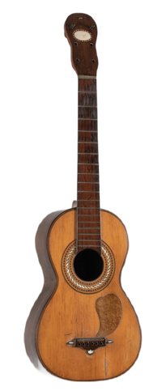

La guitare est un instrument apparu au XIVème siècle d’origine espagnole. Elle était au début constituée de 6 cordes doubles. Au XVIe siècle, elle est utilisée principalement par l’aristocratie (image à gauche).
La guitare a commencé à être populaire en Europe au XVIème et XVIIème siècles. Au XVIIIème siècle, les six cordes doubles de la guitare sont remplacées par des cordes simples, comme les guitares actuelles. Les luthiers (artisans qui fabriquent les instruments à cordes), agrandissent la caisse de la guitare et en augmentent les courbes.
 La guitare classique que l’on connait s’est développée au début du XIXème siècle grâce à Antonio de Torres Jurado. La guitare n’est plus utilisée seulement par les aristocrates mais aussi par les paysans, gitans et des personnes qui jouent dans des bars.
La guitare électrique a été créée aux Etats-Unis dans les années 1930, elle n’a pas de caisse de résonance contrairement à la guitare classique. Le son des cordes et amplifié électroniquement. L’inventeur de la guitare électrique, Les Paul, l’a aussi popularisée au début des années 1940. Il a ensuite inventé la guitare électrique Telecaster, la première guitare électrique commercialisée.